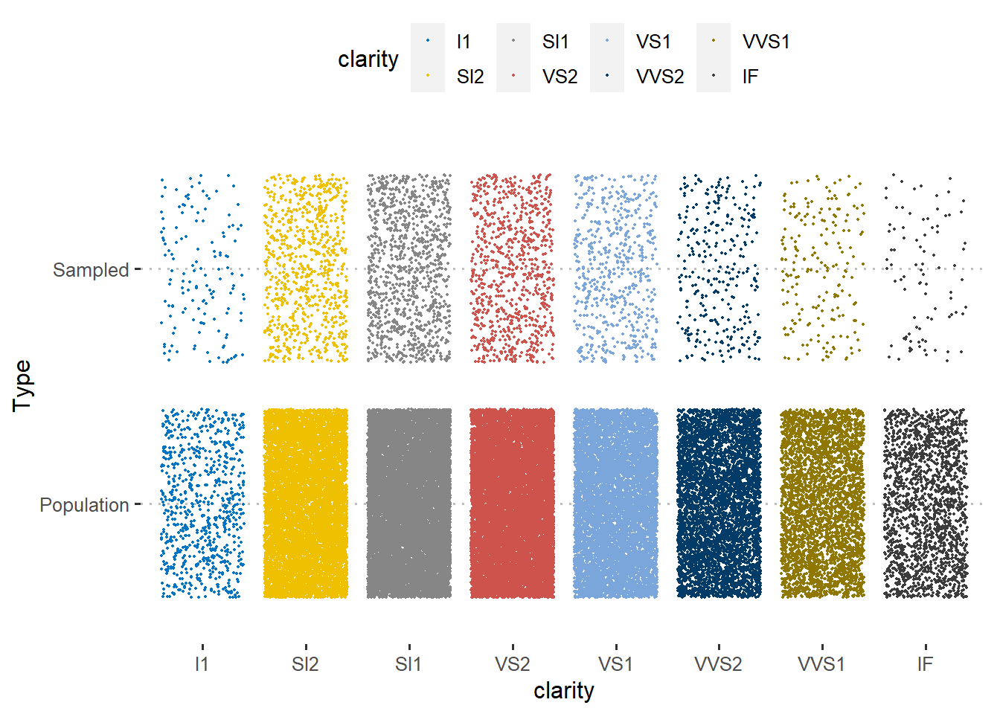
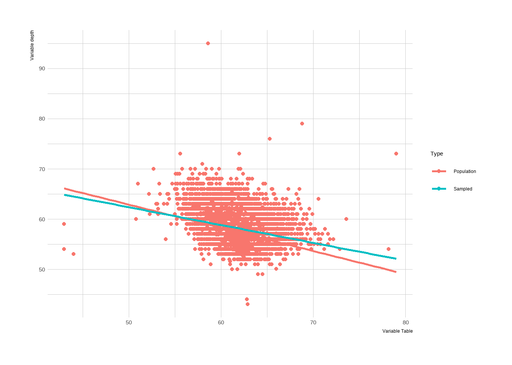
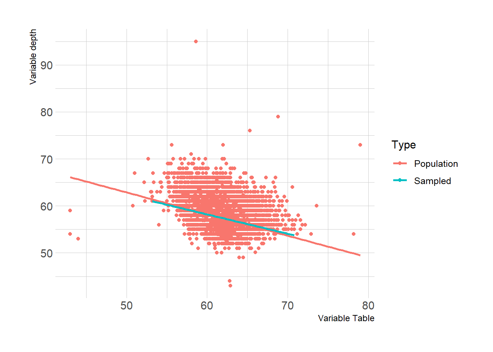

Chapter 3 Research Design for Monitoring and Evaluation Studies
In humanitarian sector research design is actually links with monitoring and evaluation plan of the programme. Through all different style of M&E plans (actually can be called as research design of making programmes accountable and measurable), there are several topics that I see as a must.
- An introduction
- What is happening in context and objective of the programme
- If secondary data available, most changing elements like a brief summary of markets etc.
- Purpose of the plan
- By implementing this plan, which questions we will answer? (Is programme impactful as intended? could be a research question for M&E)
- Why we are doing M&E and where are the bottlenecks
- Expected outcomes and reporting
- Description of the process, which activities will be implement?
- Example of activities; FGD, PDMs, KIIs, Needs Assessments etc.
- Scope of each activity (disaggregated by activity)
- How data will collect? What will be modality of data collection.
- Requirements on the field. Tools needed to conduct activities.
- How many man/work hours do we need?
- What will be the frequency of reports and what/how to report?
- Data flows
- What is the data collection tool, KOBO/ODK etc?
- Where is the database?
- Data security
3.1 Logframes, Indicators and Questionnaire Design
Through logframe, there will be several indicators that is measured by M&E teams. Team must tailor surveys to collect these indicators. There are several different methods of reflecting a log frame, yet, the one I propose is below. This version reflects anything needed; a description of indicator, data source, baseline, target, data source, frequency, main responsible, and most importantly, assumption and risks.

Logframe overlook, kindly zoom in to read, sorry!
Lets say, you are an M&E specialist to a humanitarian programme. Donor asks you to use SMART indicators (please do google it, very useful topic). Then, with the blessings of donor, or in your proposal to a donor, you reflect that your indicators will be rCSI and FCS. Second step is to designing your PDMs. rCSI is an indicator that builds over 5 questions. Thus, you have to have these questions to calculate and report rCSI. We will dig more into these indicators, how to calculate them with R in the following sessions. In a nutshell, questionnaire design orients around logframe indicators. Simple as that.

Calculation of rCSI
Additional parts of questionnaire design comes from analyst. If analyst wants to conduct a vulnerability study depending on multi-dimensional aspect, that includes household assets, these can be added as wished. So any metric compounds of set of questions can be added to the questionnaire. There are two things analyst must be careful about;
- Data collection modality.
- If modality is via phone, surveys must be short, respecting data quality.
- Questions must be simple and easy to collect via phone.
- Even for the face to face surveys, length of questionnaire is an important aspect.
- Communication must be clear and questions must not be complicated or open to bias.
- Every question must serve to a purpose. Avoid unnecessary questions or any open-ended ones for quantitative study.
3.2 Data Collection Tools
There are several different tools to collect data. IFRC generally uses KOBO. If you google, there are two links for KOBO. IFRC one called https://kobonew.ifrc.org/ and other one is https://www.kobotoolbox.org/. As far as I am aware Kobotoolbox is under OCHA’s administration. But why we have two different KOBO? That is because of servers. IFRC servers in Frankfurt, OCHA based in US. Thus, your data copyrights are protected by those laws.
U.S. DIGITAL MILLENNIUM COPYRIGHT ACT. If UNOCHA receives a notice alleging that material from your account infringes another party’s copyright, UNOCHA may disable your user account or remove alleged material in accordance with Title II of the Digital Millennium Copyright Act of 1998 (Section 512 of the U.S. Copyright Act).
ICRC uses “Device Magic” and they have their own servers. Turkish Red Crescent uses different elements, in ESSN they are using ODK and servers are based in Turkey (admin is Turkish Red Crescent) due to data security.
So there are several different means of data collection tools. My perspective, I find KOBO very efficient, but there is always a question of data security if you don’t own the server.
In this book, I will dodge how to use those platforms. Yet, they are pretty simple and KOBO even has UI to do it. Took me two nights to completely understand how it works. Also, there are several training available online.
3.3 Sample
Taken from “IndiKit Rapid Guide to Survey Sampling”, an amazing guide for humanitarians.
Sample is basically choosing who to survey. First, define your target population – the people we are interested in collecting data from.
The most common target populations are:
- people whom your intervention aims to help (its direct beneficiaries)
- other people who might have benefited indirectly (can be used for assessing the intervention’s spillover effect)
- other stakeholders of your interventions whose opinions and other data you need to assess
- members of your comparison group
- various population groups living in a given area (commonly used for needs assessments)
Keep in mind that one survey can have several different target populations. For example, a baseline survey of a nutrition-sensitive agricultural intervention might target children under 5 years (for measuring the prevalence of under nutrition), their caregivers, trained farmers as well as agriculture extension workers. Such surveys then require separate samples for each target group.
Please kindly refer to document mentioned above. Here, I will be giving some tips and tricks from my personal experiences and try to reflect how I do things operationally, in a most simplified way.

Sampling Roadmap
3.3.1 Analysis Unit
While building logframe, indicators are mostly orients around household level. Like copings, food security, expenditures etc. Thus, most of the time in humanitarian projects “analysis unit” is households. Some cases could be individual such as disability projects, education etc. Your target group defines perspective of the project. In a programme, if your registration is at household level, automatically analysis unit will be in household.
3.3.2 Non-Response Rates
Non-response rates are very important. This means a sample unit from your list that operators or FMAs cannot reach. If you have to reach 385 households in a region and have a list of 400, with %50 non-response rate, your list will not be enough for representative number. You need at least 385 x 2 = 770 sample to reach desired number of surveys.
3.3.3 Camp Context
In camp context, most easy-to-apply method is following;
- Give numbers to each containers and convert it to a vector and shuffle it.
- Generate random numbers from that vector by order.
- Pick intersection of two vector as sample.
There you have it. A random selection by containers for sampling. You may need satellite image to see the number of containers and where they are settled. If approved, a drone may do as well.
Attention is required for analysis unit-container relationship. If your analysis unit is households, than your sampling unit must be as well. Yet, imagine a concept where containers are not obtained by per household. Than, different set of approach is required. Thus, effecting questionnaire design.
3.3.4 Drawing Sample with R
3.3.4.1 Layered-Clustered Sample
In humanitarian sector, I see that programme monitors usually applies clustered samples. Cluster layers could be regions, nationality, gender etc. where researchers wants to have a representative knowledge for each cluster group. There are several different methods for sampling. I personally like machine learning style of sampling.
library(tidyverse)
library(ggplot2)
head(diamonds,5)## # A tibble: 5 × 11
## carat cut color clarity depth table price x y z Type
## <dbl> <ord> <ord> <ord> <dbl> <dbl> <int> <dbl> <dbl> <dbl> <chr>
## 1 0.23 Ideal E SI2 61.5 55 326 3.95 3.98 2.43 Population
## 2 0.21 Premium E SI1 59.8 61 326 3.89 3.84 2.31 Population
## 3 0.23 Good E VS1 56.9 65 327 4.05 4.07 2.31 Population
## 4 0.29 Premium I VS2 62.4 58 334 4.2 4.23 2.63 Population
## 5 0.31 Good J SI2 63.3 58 335 4.34 4.35 2.75 PopulationLets do this exercise over “Diamonds” data comes with tidyverse package. Thus, this data is population data and you need to draw some samples for a study.
Setting the Scene:
You are a data scientist works with monitoring and evaluation unit in country office x. There is a cash-based intervention and you are responsible for designing a PDM. In programme objective, it says; increasing economic situation of the target population. So this is basically your research question. Now it is time to build a research design. In secondary data review, you find out that for specific regions, socio-economical indicators are very different (livelihoods and expenditures etc.). Thus, to have an accurate outcomes, you design a representative sample for each region, to have a better understanding of the concept. Operationally, you have enough capacity to collect data within promised time (I am stating that because dividing sample into layers means more surveys, it could be overall 385 or for two regions 385 x 2). Now, you have the population data and sample stage is at hand. In first version, we will draw a quick sample from overall population and then move to more simplified version of layered sample.
#A quick overlook to data
glimpse(diamonds)## Rows: 53,940
## Columns: 11
## $ carat <dbl> 0.23, 0.21, 0.23, 0.29, 0.31, 0.24, 0.24, 0.26, 0.22, 0.23, 0.30, 0.23, 0.22, 0.31, 0.20, 0.32, 0.…
## $ cut <ord> Ideal, Premium, Good, Premium, Good, Very Good, Very Good, Very Good, Fair, Very Good, Good, Ideal…
## $ color <ord> E, E, E, I, J, J, I, H, E, H, J, J, F, J, E, E, I, J, J, J, I, E, H, J, J, G, I, J, D, F, F, F, E,…
## $ clarity <ord> SI2, SI1, VS1, VS2, SI2, VVS2, VVS1, SI1, VS2, VS1, SI1, VS1, SI1, SI2, SI2, I1, SI2, SI1, SI1, SI…
## $ depth <dbl> 61.5, 59.8, 56.9, 62.4, 63.3, 62.8, 62.3, 61.9, 65.1, 59.4, 64.0, 62.8, 60.4, 62.2, 60.2, 60.9, 62…
## $ table <dbl> 55, 61, 65, 58, 58, 57, 57, 55, 61, 61, 55, 56, 61, 54, 62, 58, 54, 54, 56, 59, 56, 55, 57, 62, 62…
## $ price <int> 326, 326, 327, 334, 335, 336, 336, 337, 337, 338, 339, 340, 342, 344, 345, 345, 348, 351, 351, 351…
## $ x <dbl> 3.95, 3.89, 4.05, 4.20, 4.34, 3.94, 3.95, 4.07, 3.87, 4.00, 4.25, 3.93, 3.88, 4.35, 3.79, 4.38, 4.…
## $ y <dbl> 3.98, 3.84, 4.07, 4.23, 4.35, 3.96, 3.98, 4.11, 3.78, 4.05, 4.28, 3.90, 3.84, 4.37, 3.75, 4.42, 4.…
## $ z <dbl> 2.43, 2.31, 2.31, 2.63, 2.75, 2.48, 2.47, 2.53, 2.49, 2.39, 2.73, 2.46, 2.33, 2.71, 2.27, 2.68, 2.…
## $ Type <chr> "Population", "Population", "Population", "Population", "Population", "Population", "Population", …Lets take “cut” as region here. This variable is categorical with 5 unique values. There are several good-ends of taking sample with data partition. More info can be found in: http://topepo.github.io/caret/data-splitting.html
If you need to calculate threshold (desired number for representative sample), Raosoft (http://www.raosoft.com/samplesize.html) is a good sample size calculator. So in this example, lets decide metrics wih Raosoft; with %5 margin of error, %95 confidence level, population size of 53940 and %50 response distribution (maximum unknown) our sample size is 382. Including %50 non-response rate sample size (a call list or interviewee list) is 764. In the current situation we are using cluster sampling so that for five different categories (could be region, nationality etc. in humanitarian sector) we need to draw 382 (764) for each of them. We did take ‘cut’ as our layer in the sampling. Thus, for five categories we need sample of 764 * 5 = 3820 sample which is ~%7.1 of our population.
#Easiest way to draw layered sample. One row coding, amazing package!
layered_sample <- diamonds %>% group_by(cut) %>% slice_sample(n=780,replace = FALSE)
table(layered_sample$cut)##
## Fair Good Very Good Premium Ideal
## 780 780 780 780 780Now that we draw sample. But, we have to compare population metrics with sample metrics. As stressed in scenario paragraph, we are trying to understand socio-economic variables from sample, and then we will assume these findings applies to whole population.
A small trick, we might forecast how successful our sampling in terms of making conclusions. We do have an information about our sample; lets say household size. So if your sample household size distribution and your population is not statistically different, we can assume that our sample does well and outcomes of socio-economic conclusions are applies to whole population.
Lets start with categorical variables. Below, from graphs, one can see that distribution of clarity and type (Remember these are coming from diamonds data. You can interpret them as any other categorical variable that is available in humanitarian sector). What this visual tells us is this: density of group taken into consideration and distributions applies to whole case, without leaving any different characteristic behind. So that is a good sample!
diamonds$Type <- 'Population'
layered_sample$Type <- 'Sampled'
Compare <- rbind(layered_sample,diamonds)
ggplot(Compare, aes(clarity, Type)) +
geom_jitter(aes(color = clarity), size = 0.3)+
ggpubr::color_palette("jco")+
ggpubr::theme_pubclean()
Let’s double check with numeric variables and compare them by type. Depth and Table variables taken into consider. Check how both linear models does not aligns with each other perfectly, but does well enough. Here, we can assume that our sample does really well!
library(hrbrthemes)
Compare %>%
ggplot(aes(x = depth, y = table, group = Type, color = Type)) +
geom_point() +
geom_smooth(method = "lm", se = FALSE) +
labs(x = "Variable Table",
y = "Variable depth") +
theme_ipsum()
Key differences between sample and population happens due to we give same importance to each cut category. But in reality, their distribution (their frequency-density in population) is different, yet we did draw 780 sample from each of them. This is where one must apply weights in order to balance the outcomes and to have better accuracy while making assumptions of population values. Weights can be calculated as: each categories’ sample size ratio (# of survey of each category divided by total sample-survey number) divided by each categories’ population size ratio (frequency of each category divided by total population number) will give you weights.
PUT WEIGHT TABLE HERE
3.3.4.2 Random Sampling
For random sampling, without any clusters, data partition technique is amazing. Lets say we want to draw 3820 sample out of 53940 (row number of diamonds data), which is ~7.1% of our total population. “p” metric in data goes as 0.71. We mark selected cases as index, and split data by sampled and outsampled. Distribution here will be more accurate then layered sampling. Please do check linear line and table of cut variable.
#Select rows - proportionally depending on "cut"~ acts as region.
#library caret contains "createDataPartition" function.
library(caret)
diamonds_index <- createDataPartition(diamonds$cut, p = .071,
list = FALSE,
times = 1)
#Divide data by sample: selected -> sampled & Not in sample -> outsample
diamonds_sample <- diamonds[ diamonds_index,]
diamonds_outsample <- diamonds[-diamonds_index,]#As you see, frequency of cut category is not same with clustered version.
#Percentage of each cut category is same with population percentages now.
table(diamonds_sample$cut)##
## Fair Good Very Good Premium Ideal
## 115 349 858 980 1531library(hrbrthemes)
diamonds$Type <- 'Population'
diamonds_sample$Type <- 'Sampled'
Compare_partition <- rbind(diamonds_sample,diamonds)
Compare_partition %>%
ggplot(aes(x = depth, y = table, group = Type, color = Type)) +
geom_point() +
geom_smooth(method = "lm", se = FALSE) +
labs(x = "Variable Table",
y = "Variable depth") +
theme_ipsum()
You can see that linear models are overlaps better, if you compare it to clustered sample. This is also another good example of why we need to apply weights in clustered samples, before making an assumption towards population.
3.3.4.3 Lessons Learned from Sampling
I would also like to reflect few lessons learned from my end towards sampling-operational balance.
If you cluster your sample with regions, select proper enumerator for proper regions. In some cases, some regions may speak different language, or attendees may be more coherent when enumerator speaks their language or when enumerators are from same region.
Selecting an enumerator from or experience with that region usually reduces survey time and increases data quality. Also they are better when you ask for feedback towards questionnaire.
Take into consideration of gender of your enumerator, where in some regions female enumerators can have positive added values while surveying.
Keep in touch with enumerators, if they feel something is wrong with sampling, let them warn you. For ex; all the attendees saying that they are living in some other region than your sampling list-call list.
Keep track of enumerators if you have clustered sample. Lets say you are calculating %50 of non-response rate of 300 survey, thus your sampling is 600. For some clusters non response rate might be lower, so they may exceed the number of 300, means that you have to stop those enumerators to do extra calls. But of course, always have some extra calls since you might delete some records during data cleaning. And vice-versa, some clusters may have non response rate more than %50, so you might need to give them extra call list during operation.
When you share your coding, do not forget to add seeds into your coding, so that your studies can be reproducible by others.
When you do random sampling over population data, if you do care a bit about some categories as well (like region, sex, nationality etc.), their frequency might be low like 30~ish in your sample. Round them up to at least 50-60 to get an idea about those disaggregations so that you can conduct some t-test etc.
This marks the end of our sampling section. Always remember, we need good sampling to make accurate decisions. There is a chance of stat error or human error, so if you find any conclusion with your studies, cross check it with reality, talk with someone experienced with context and talk with locals. Hope this helps with your sampling operation in humanitarian studies! Best!
3.4 Modality of Surveys
Personally, I can not go into details of this section. This concept is directly linked with context. Yet, there are some points that I experienced. Basically, if you have the opportunity of phone surveys, amazing. They are cheap and fast. If you have a target group scattered wide geographical areas, face to face surveys are hard to conduct and very expensive.
In my concept, we are doing PDMs via phone and there is a study called IVS (intersectoral vulnerability study) helds by house visits. In context of ESSN, we do have capacity to conduct face to face surveys, yet, our target group is all around Türkiye. So if you do a random sampling, you may end up someone with 300 KM away in a village, just one person to visit there. Not a good plan for operation. Your field staff most likely will not even visit that village. What we did to prevent that is we see that 10 provinces covers %95 of our target group, out of 81 provinces. So we focus on these ones to make study more budget-operational friendly. Also, we reduced confidence level from 95 to 90. So there was a trade off of losing some information of population, but having more in-depth information of others. Because, face to face surveys gives you more room to study with. You can observe household assets, data quality is better and your FMAs (field monitoring assistants) can observe vulnerability of the households. For phone surveys, as we mentioned, they must be short and understandable. One cannot go into detailed complex questionnaires with that modality.
Selected survey modality affects questionnaire design step, so first thing is to decide the survey modality and than decide indicators of logframe and their means of verification (data source). To decide modality, you need to know operational capacity and budget- with an understanding of geographical coverage of the programme and target group characteristics.
Also there are different methods of sampling useful for face to face surveys. I would recommend to check those methods if you are to organize F2F modality; check Annex I -Sampling of CVME held by WFP. (https://docs.wfp.org/api/documents/WFP-0000112161/download/)